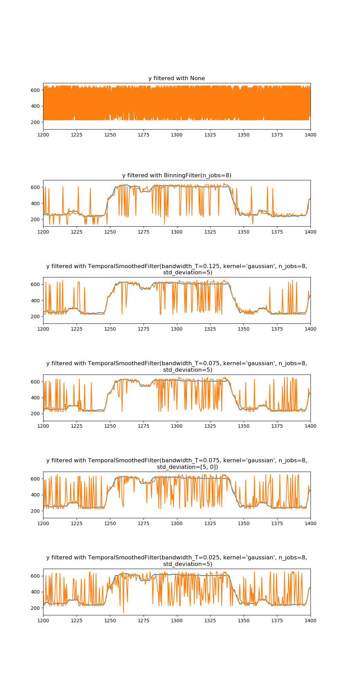

Note
Click here to download the full example code
A comparison of the temporal filters applied to KDE decoding¶
A brief comparison of predictions from several filtering methods
from mlneuro.datasets import load_restaurant_row_spikekde
from mlneuro.filtering import *
from mlneuro.common.bins import reshape_flat, linearized_bin_grid, bin_edges_from_centers, bin_centers_from_edges
from mlneuro.utils.visuals import n_subplot_grid
import numpy as np
import matplotlib.pyplot as plt
# Temporal resolution to filter at, in seconds
RESOLUTION = 0.025
# Plot the maximum predicted value in each 0ension
DISPLAY_PLOTS = True
# The time range to show in the plot (None for auto)
# default is a small range for example plots in documentation
PLOT_X_RANGE = [1200,1400]
kde_results = load_restaurant_row_spikekde()
T = kde_results['times']
y = kde_results['test_stimulus']
y_pred = reshape_flat(kde_results['estimates'])
ybin_centers = kde_results['bin_centers']
ybin_grid = linearized_bin_grid(ybin_centers)
FILTERS = [None,
BinningFilter(n_jobs=8),
TemporalSmoothedFilter(bandwidth_T=np.round(5*RESOLUTION, 3), std_deviation=5, n_jobs=8),
TemporalSmoothedFilter(bandwidth_T=np.round(3*RESOLUTION, 3), std_deviation=5, n_jobs=8),
TemporalSmoothedFilter(bandwidth_T=np.round(3*RESOLUTION, 3), std_deviation=[5, 0], n_jobs=8),
TemporalSmoothedFilter(bandwidth_T=np.round(1*RESOLUTION, 3), std_deviation=5, n_jobs=8)]
filtered_times = []
filtered_predictions = []
filtered_max_pred = []
for filt in FILTERS:
if filt is not None:
# Use the predict proba method of the filters to normalize the filtered array
T_filt, y_pred_filt = filter_at(filt, 0.5, T, y_pred, method='predict_proba')
else:
# Get unfiltered results
T_filt = T
y_pred_filt = y_pred
if isinstance(filt, BinningFilter):
T_filt = bin_centers_from_edges([T_filt])
filtered_times.append(T_filt)
filtered_predictions.append(y_pred_filt)
# Calculate the max-predicted bin
y_predicted = ybin_grid[np.argmax(y_pred_filt, axis=1)]
filtered_max_pred.append(y_predicted)
# Output
if DISPLAY_PLOTS:
fig, axes = n_subplot_grid(len(FILTERS), max_horizontal=1, figsize=(10,20), hspace=1.1)
for times, pred, ax, filt in zip(filtered_times, filtered_max_pred, axes, FILTERS):
ax.plot(T, y[:, 0])
ax.plot(times, pred[:, 0])
if PLOT_X_RANGE is not None: ax.set_xlim(PLOT_X_RANGE)
ax.set_title('y filtered with {}'.format(filt))
fig.show()
Total running time of the script: ( 0 minutes 3.746 seconds)